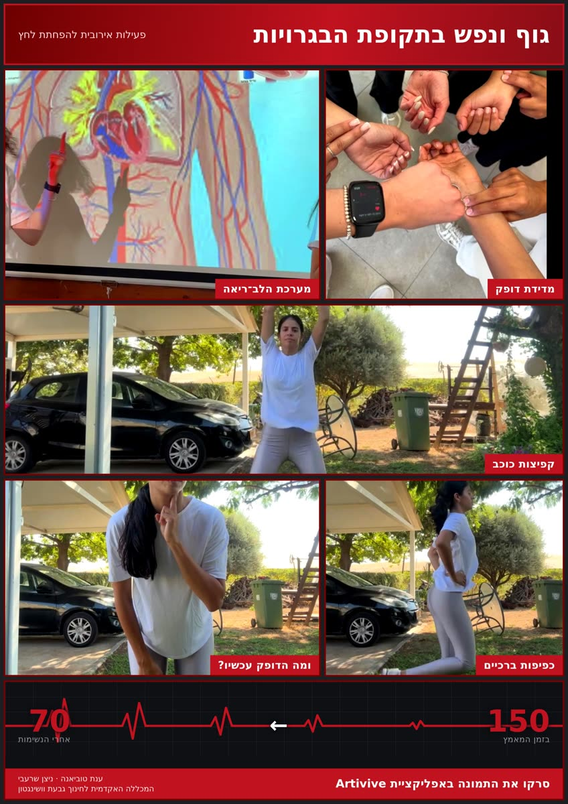

פרויקט גמר
ענת טוביאנה וניצן שרעבי
גוף ונפש בתקופת הבגרויות — פעילות אירובית להפחתת לחץ
מגמה מדעית · שנה ג׳ · המכללה האקדמית לחינוך גבעת וושינגטון
סמסטר ב׳, תשפ״ו
מוגש לאילן נגר במסגרת קורס שילוב כלים טכנולוגיים

ת"ז: ענת טוביאנה 213272776 · ניצן שרעבי 323812545
מערך שיעור
מדידת דופק במאמצים משתנים
בשיעור הזה תמדדו את הדופק שלכן בעצמכן — במנוחה, ואז אחרי ארבע רמות מאמץ שונות, מהליכה רגועה ועד ספרינט מלא. הטבלה שלמטה מפרטת את מהלך השיעור שלב אחר שלב, כדי שתדעו למה לצפות בכל חלק ולמה הוא חשוב. עד הסוף תגלו למה מהירות ההתאוששות של הלב שלכן היא לא רק מדד כושר, אלא גם רמז לאיך אתן מתמודדות עם לחץ.
| חלק / זמן | מטרת התרגיל | תיאור הפעילות | נקודות להדגשה | ארגון הלמידה |
|---|---|---|---|---|
| פתיחה (3 דק׳) | קבלת הכיתה ומיקוד בנושא | ישיבה במעגל, הצגת נושא השיעור וחלוקת טופסי תיעוד הדופק | קישור מיידי לתקופת הבגרויות — יצירת רלוונטיות אישית | מעגל ישיבה |
| חימום דינמי (7 דק׳) | הכנת הלב-ריאה והשרירים למאמץ ומניעת פציעות | שני סיבובי ריצה קלה, ואז במסלול מסומן: הרמת ברכיים · עקבים לישבן · דילוגים · סיבובי ידיים. סיום בשתי האצות קצרות בעצימות עולה |
עלייה הדרגתית בעצימות; אין מתיחות סטטיות לפני מאמץ | פזורות במסלול, המורה מלווה |
| מדידת בסיס (8 דק׳) | הקניית טכניקת מדידת דופק והשגת ערך ייחוס אישי | הדגמה ותרגול איתור הדופק בשורש כף היד. מדידה ראשונה של 10 שניות, הכפלה ב-6 ורישום כ"דופק בסיס" |
לא למדוד באגודל; לחיצה קלה בלבד | בזוגות |
| ניסוי דופק במאמצים משתנים (17 דק׳) | חוויה גופנית של הקשר בין עצימות המאמץ לקצב הלב, והתנסות במדד ההתאוששות | ארבע משימות ברצף, ומדידת דופק מיידית בסיום כל אחת: 1. הליכה רגילה (2 דק׳) 2. ריצה קלה (3 דק׳) 3. ספרינט במקום (30 שנ׳, עצימות מרבית) 4. הרפיה על מזרן (1 דק׳) — מדד ההתאוששות |
המדידה חייבת להתחיל מיד בתום המשימה; עיכוב משנה את התוצאה | בזוגות, החלפת תפקידים אחרי משימה 2 |
| עיבוד הממצאים ומעגל שיח (8 דק׳) | הפיכת הנתונים האישיים לתובנה וקישור לתקופת הבגרויות | מעגל שיח סביב הטפסים; שאלות מנחות על השינוי בדופק ועל קצב ההתאוששות | לתת לתלמידות להסיק בעצמן; הימנעות מהשוואה תחרותית ביניהן | מעגל ישיבה, כל תלמידה עם הטופס שלה |
| שחרור וסיכום (2 דק׳) | הרפיה, סגירת מעגל והכנה לשיעור הבא | מתיחות סטטיות, משפט סיכום ואיסוף הטפסים | הטפסים נשמרים — בשיעור הבא נשווה אליהם | מפוזרות, המורה מדגימה |
חידון אינטראקטיבי
Genially
בחנו את עצמכם: כמה אתם באמת יודעים על הקשר בין דופק, פעילות אירובית וסיבולת לב-ריאה? שמונה שאלות קצרות ילוו אתכם מהמושגים הבסיסיים ועד לקשר שבין הכושר שלכם לבין ההתמודדות עם לחץ בתקופת הבגרויות. אחרי כל תשובה תקבלו משוב מיידי, ובסיום — התאמה אישית לרמת הידע שלכם.
למה סיבולת לב-ריאה חשובה
סרטון הסברה
בסרטון הקצר הזה תבינו מה זו סיבולת לב-ריאה, ולמה היא הרבה יותר מסתם מדד כושר. תראו איך שיפור היכולת הזו יכול לעזור לכם להתרכז, להירגע ולהתמודד טוב יותר עם הלחץ שמלווה את תקופת הבגרויות. שימו לב במיוחד לקשר שבין קצב הלב לבין מהירות ההתאוששות שלכם — בדיוק העיקרון שנבדוק ביחד בשיעור.
מציאות רבודה
סרקו את התמונה באפליקציית Artivive
התמונה שלמטה היא לא רק תמונה — סרקו אותה ותגלו סרטון קצר שמראה בצורה ויזואלית מה קורה בגוף ובנפש שלכם בזמן פעילות אירובית. זו הזדמנות לראות בעצמכם, לא רק לקרוא, איך המאמץ הגופני קשור לוויסות הלחץ ולסיבולת לב-ריאה. הצעד הראשון: להוריד את האפליקציה.

- 1 הורידו את אפליקציית Artivive מחנות האפליקציות
- 2 פתחו את האפליקציה ואפשרו גישה למצלמה
- 3 כוונו את המצלמה אל התמונה שלמעלה — אפשר ישירות מהמסך — והחזיקו יציב כמה שניות, עד שהיא תתעורר לחיים
סרטון אינטראקטיבי
Edpuzzle
זהו סרטון ההסברה מלשונית 03, רק שהפעם הוא עוצר אתכם בדרך. שש עצירות פזורות לאורכו — חמש שאלות ועוד הערת פתיחה — ואחת מהן תבקש מכם למדוד את הדופק שלכם ממש באותו רגע, אז כדאי שיהיה בהישג יד שעון או טלפון עם סטופר. ענו בקצב שלכם; המשוב המיידי יגיד לכם על המקום אם משהו לא היה ברור.
- 1 לחצו על הכפתור — הסרטון ייפתח ב-Edpuzzle בכרטיסייה חדשה
- 2 הזינו את שמכם המלא כשתתבקשו — אין צורך בהרשמה או בסיסמה
- 3 צפו וענו על העצירות לאורך הסרטון — באחת מהן תתבקשו למדוד דופק, אז שמרו שעון או סטופר בהישג יד
ספר דיגיטלי
Book Creator
הספר הדיגיטלי מרכז את כל מה שלמדתם בפרויקט הזה בעשרה עמודים קצרים וברורים — מהגדרת סיבולת לב-ריאה ומדידת הדופק, ועד לממצאי המחקר שלנו ותוכנית שבועית מעשית שאפשר להתחיל ליישם כבר היום. אפשר לדפדף בקצב שלכם ולחזור לכל עמוד בכל שלב. תוכן העניינים של הספר מופיע למטה, כך שתוכלו לקפוץ ישר לעמוד שמעניין אתכם.
תוכן העניינים של הספר
- 1שער — כותרת, מחברות, מכללה
- 2למה אנחנו כל כך לחוצים? — הלחץ בתקופת הבגרויות
- 3מה זו סיבולת לב-ריאה? — הגדרה ומנגנון פיזיולוגי
- 4הדופק — המד שלך — מדידה ידנית, מנוחה והתאוששות
- 5מה זו פעילות אירובית? — הגדרה ודוגמאות, מה כן ומה לא
- 6איך זה מרגיע אותנו? — זרימת דם למוח, חלבונים, קורטיזול
- 7גוף ומוח עובדים יחד — למידה מעוגנת גוף
- 8מה גילינו במחקר שלנו — ממצאי ההתערבות, במדויק ובזהירות
- 9התוכנית שלך לשבוע — תוכנית מעשית וריאלית
- 10סיכום — מסר סוגר וקריאה לפעולה